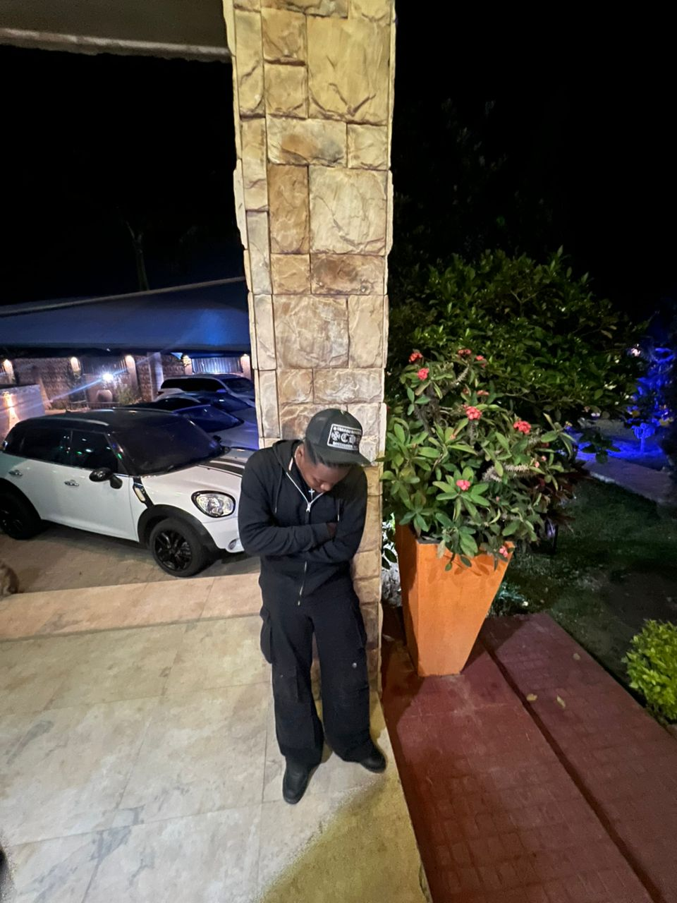
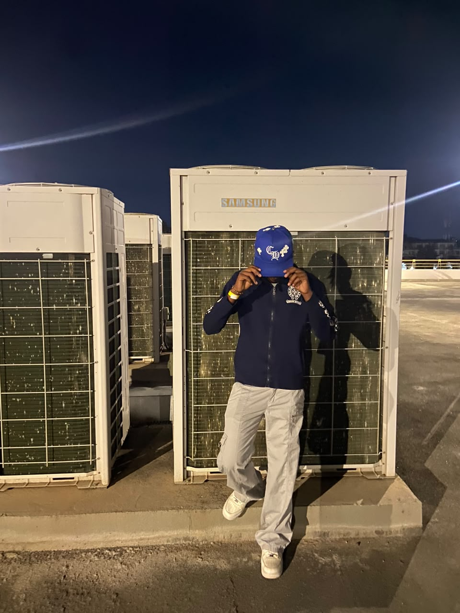
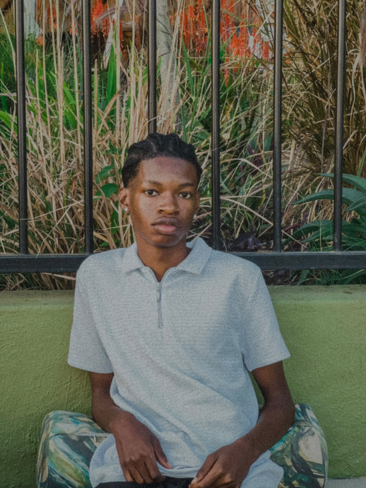

Meet The Team

AbrahamXO!
Founder & CEO
Founder of StayCountinUp Records and one of the label's recording artists. AbrahamXO! leads the label's vision, creative direction, and growth.

NoStylst
COO
NoStylst is a rapper and part of the creative force behind StayCountinUp, helping oversee the label's operations and structure.

Lucky2x
Artist Manager
Lucky2x helps guide and develop the label's artists while acting as a bridge between the Zambian underground and South African underground scenes.

Dirty Money President
Marketing Manager
Handles StayCountinUp's marketing, promotion, and brand visibility. Also represents Overground Society.

LanceClippedDis
Film Director
Leads the visual side of StayCountinUp through film, storytelling, and cinematic content.

Licia
Model / Cover Girl
Licia is a model and the official cover girl of StayCountinUp Records, representing the visual identity and aesthetic of the label.